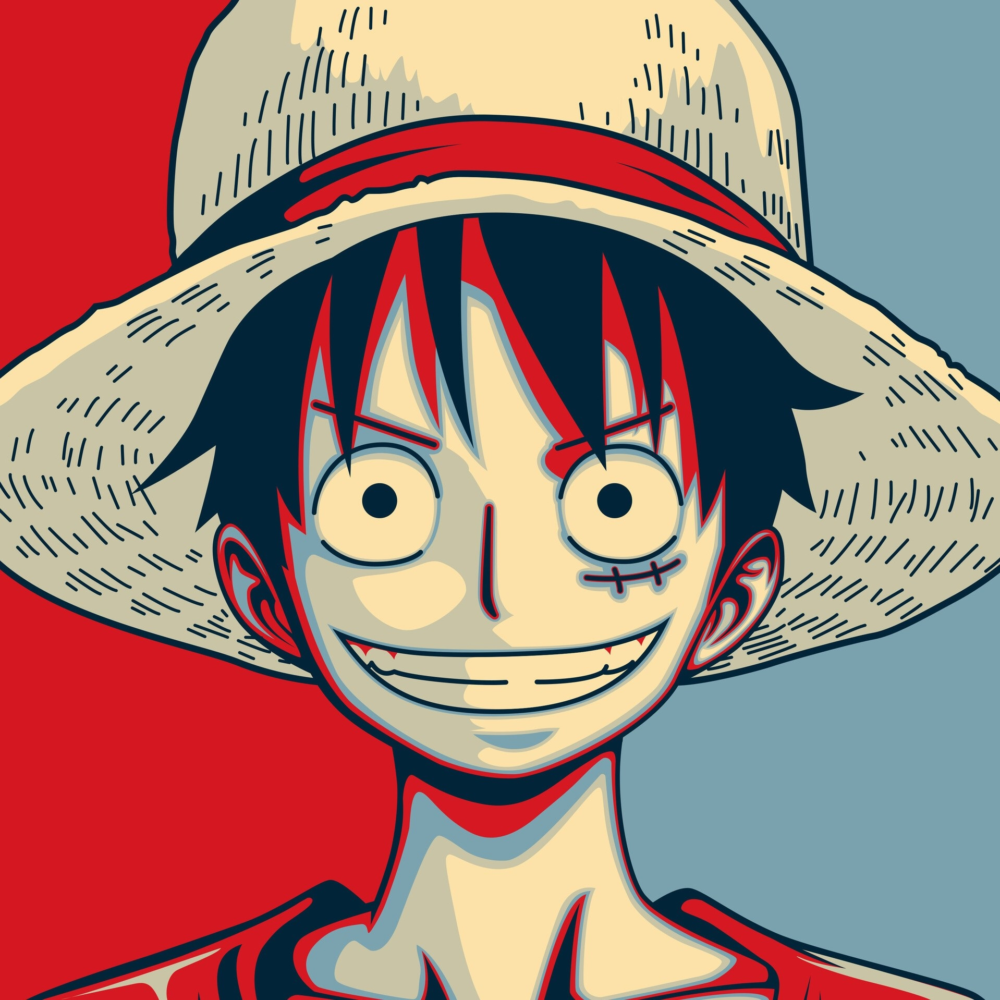
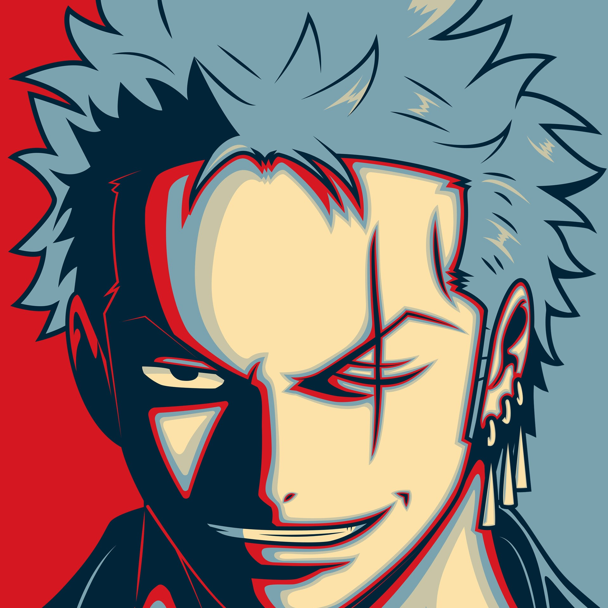
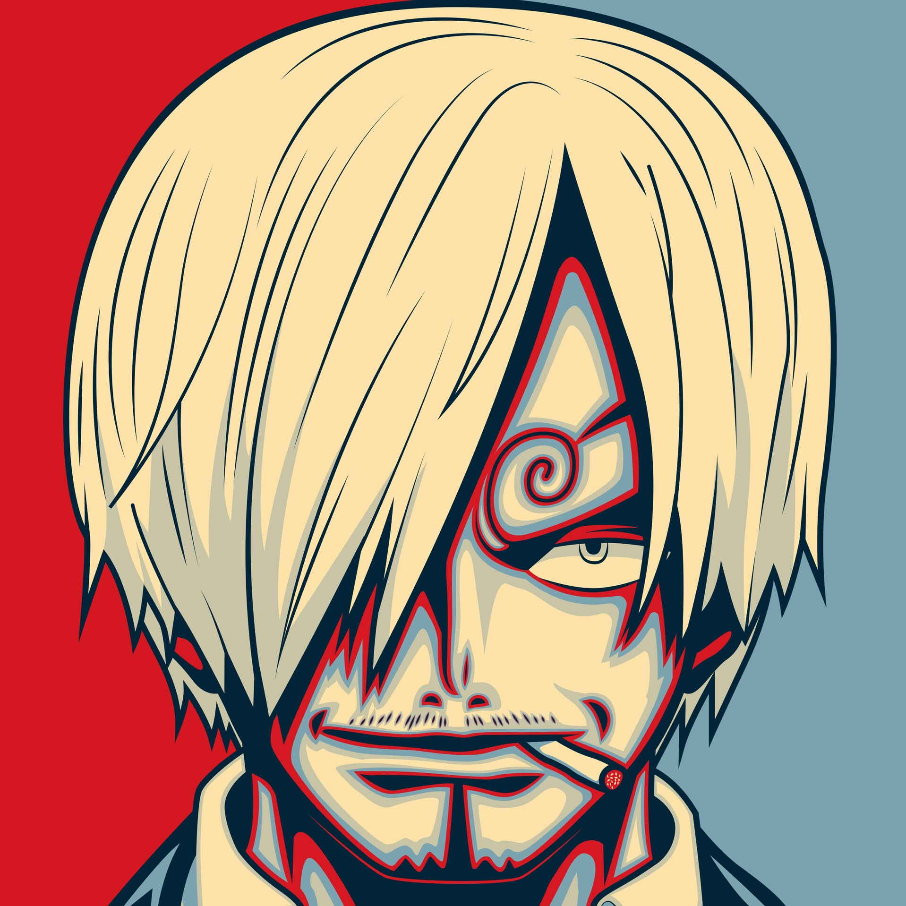
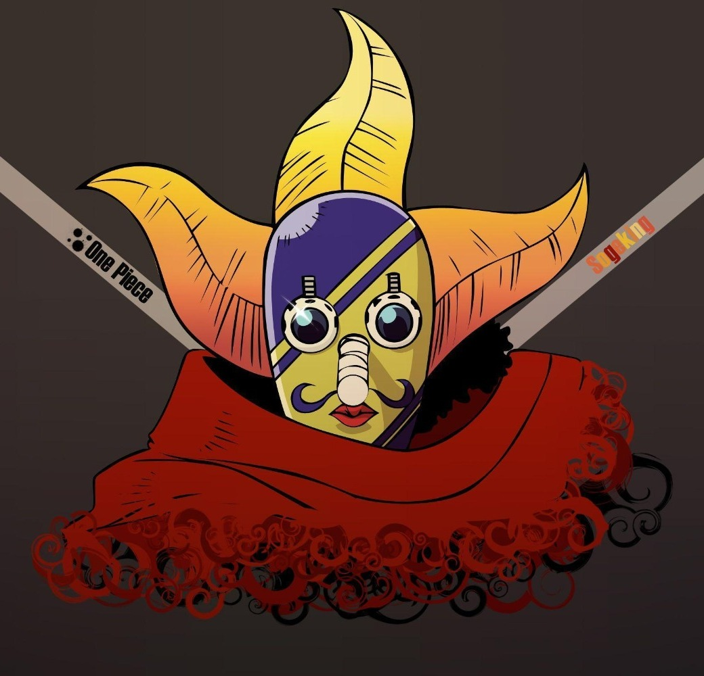
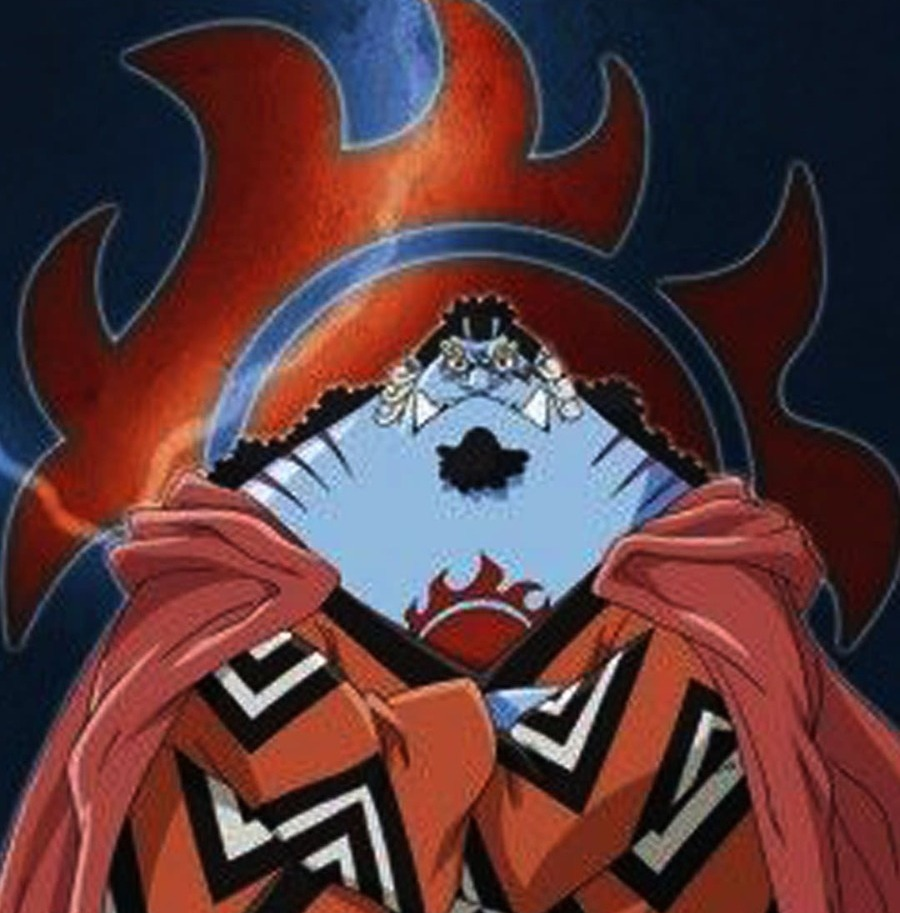

Monkey D. Luffy
Monkey D. Luffy, also known as "Straw Hat Luffy" and commonly as "Straw Hat",
is the founder and captain of the increasingly infamous and powerful Straw Hat Pirates,
as well as the most powerful of its top fighters. He desires to find the legendary
treasure left behind by the late Gol D. Roger and thereby become the Pirate King,
which would help facilitate an unknown dream of his that he has told only to Shanks,
his brothers and crew. He believes that being the Pirate King means having the most freedom in the world.

Roronoa Zoro
Roronoa Zoro, also known as "Pirate Hunter" Zoro, is the combatant of the Straw Hat Pirates,
one of their two swordsmen, one of the Senior Officers of the Straw Hat Grand Fleet, and is publicly
recognized as the right-hand man of his crew's captain Monkey D. Luffy. Formerly a bounty hunter,
he is the second member of Luffy's crew and the first to join it, doing so in the Romance Dawn Arc.
His dream is to become the greatest swordsman in the world, in order to honor a promise he made to his deceased childhood friend Kuina.

Vinsmoke Sanji
"Black Leg" Sanji, born as Vinsmoke Sanji, is the cook of the Straw Hat Pirates
and one of the Senior Officers of the Straw Hat Grand Fleet
He is the fifth member of the crew and the fourth to join, doing so at the end of the Baratie Arc.
His dream is to find the rumored chef's paradise, All Blue, which is where East Blue,
West Blue, North Blue, and South Blue meet, along with their wildlife.
He is one of the top three fighters of the Straw Hats, alongside Luffy and Zoro, who are referred to as the "Monster Trio".
Nico robin
Nico Robin, also known by her epithet "Devil Child" and the "Light of the Revolution",
is the archaeologist of the Straw Hat Pirates and one of the Senior Officers of the Straw Hat Grand
Fleet. She is the seventh member of the crew and the sixth to join, doing so at the end of the Arabasta Arc.
She temporarily left the crew during the Water 7 Arc but rejoined during the Enies Lobby Arc.
Robin ate the Hana Hana no Mi at a young age, giving her the power to reproduce her body parts (or her entire body)
on any surface at will.

God Usopp
"God" Usopp is the sniper of the Straw Hat Pirates and one of the Senior Officers of the Straw Hat Grand Fleet.
He is the fourth member of the crew and the third to join, doing so at the end of the Syrup Village Arc.
Although he left the crew during the Water 7 Arc, he rejoined at the end of the Post-Enies Lobby Arc.
Usopp is the son of Yasopp and Banchina. He was born and raised in Syrup Village.
Despite his usual cowardice,
Usopp dreams of becoming a brave warrior of the sea just like his father and lives every day in pursuit of living up to this dream.

Jinbe
"Knight of the Sea" Jinbe is the helmsman of the Straw Hat Pirates and one of the Senior Officers of the Straw Hat Grand Fleet.
He is the tenth member of the crew and the ninth to join, doing so during the Wano Country Arc.
Jinbe is a whale shark fish-man and a powerful master of Fish-Man Karate. His dream is to fulfill his former captain Fisher
Tiger's dying wish of coexistence and equality between humans and fish-men.
He eventually became one of the Seven Warlords of the Sea, though he resigned during the Summit War of Marineford.